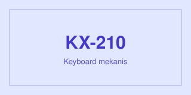
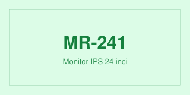
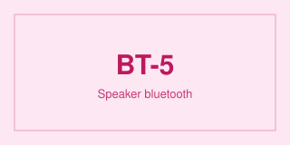

Bab 10 · Komponen Bootstrap · 14 carousel-item-aktif
Carousel adalah deretan gambar banner yang bergeser sendiri. Pergeserannya butuh paket JavaScript, jadi di buku ini carousel diperagakan berhenti di item aktif: satu gambar tampak, sisanya tetap tersimpan di markup.
<div class="carousel">
<div class="carousel-inner">
<div class="carousel-item active">
<img src="img/produk-keyboard-kx210.svg" class="d-block w-100" alt="Banner keyboard mekanis KX-210">
</div>
<div class="carousel-item">
<img src="img/produk-monitor-mr241.svg" class="d-block w-100" alt="Banner monitor IPS MR-241">
</div>
</div>
</div>active menentukan gambar yang tampak; sisanya tetap tersimpan di dalam carousel-inner. d-block w-100 membuat gambar mengisi lebar panggung tanpa celah di bawahnya. Tombol panah dan indikator titik sengaja tidak disertakan.



Hanya gambar pertama yang tampak. Dua gambar lain ada di markup, tetapi disembunyikan CSS kecuali item yang memakai active — tanpa JavaScript, carousel berhenti di gambar itu dan tidak bergeser sendiri.
Ketiga komponen interaktif di bagian ini — accordion, modal, dan carousel — adalah alasan utama tim memuat paket JavaScript resmi. Selama paket itu tidak dimuat, komponennya tetap jujur: tampil dalam satu keadaan tetap.